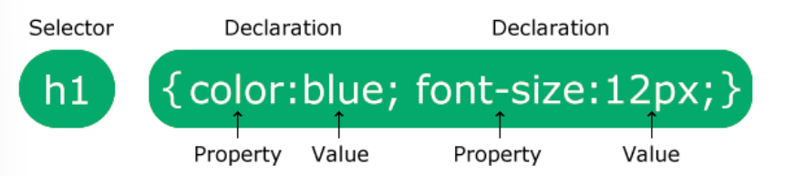

Web Technologies
The world wide web is an information system enabling documents and other web resources to be accessed over the Internet.
Documents and downloadable media are mad available to the network through web servers und can be accessed by programs like web browsers.
Servers and resources are identified and located through character strings called uniform resource locator (URLs).
Web Pages are formatted in Hypertext Markup Language (HTML). You can use it for plain text, images, videos, audios and scripts.
Hyperlinks (embedded URLs) provide immediate acces to other web resources.
The information in the Web is transferred across the internet using the Hypertext Transfer Protocol (HTTP).
Viewing a web page normally begins by typing the URL of the page into a web browser.
When you access a page the browser resolves the server name of the URL into an Internet Protocoll adress using the Domain Name System (DNS).
This lookup returns an IP adress, and then the browser requests the resource by sending an HTTP request to the computer at that adress.
Then it renders the HTML documents into a multimedia web page.
Three essential technologies for the world wide web:
HTML - Structure of the website
CSS - Style of the webpage
JS - JavaScript, which is used for action and dynamics
A Uniform Resource Locator (URL) is a reference to a web resource the specifies its location on a computer network and a mechansim for retrieving it.
A typical URL indicates a protoll (http), a hostname (www.example.com) and a file name (index.html).
A web server is computer software and underlying hardware that accepts request via HTTP or HTTPS. The server responds with the content of that resource or an error message.
A web server can also accept and store resources sent from the user agent if configured to do so.
A resource sent from a web server can ba a preexisting file or it can be generated at the time of the request by another program that communicates with the server software.
A web browser is application software for accessing the world wide web (Chrome, Firefox...).
When a user requests a web page, the web browser retrieves its files from a web server and then graphically renders the page on the user's screen.
This includes image and video formats, and if a hyperlink is clicked, the browser navigates to the new resource.
Most browsers usa an internal cache of web page resources to improve loading times. This cache can store many items, such as large images.
HTML
An HTML element is defined by a start tag, some content, and an end tag.
A void element has no content (e.g. <br> break line).
An attributs provides additional information about elements and are always specified in the start tag.
They usually come in Name/value pairs like name="value"
All HTML documents must start with a !DOCTYPE declaration <!DOCTYPE html>. It's an information to the browser about what document type to expect. It must only appear once, at the top of the page.
The html tag <html> represents the root of an HTML document. It's the container for all other HTML elements, except the !DOCTYPE tag.
The head element <head> is a container for metadata and is placed between the html tag and the body tag. Metadata typically define the document title, character set, styles, scripts...
The body element <body> contains all the contents of an HTML document, such as headings, paragraphs, images, hyperlinks etc. There can only be one body element in an HTML document.
The title tag <title> defines the title of the document and it's shown in the browser's title bar or in the pages's tab.
The em tag <em> is used to define emphasized text.
The strong tag <strong> is used to define text with strong importance and the content is typically displayed in bold.
The headings <h1> defines the most important heading. <h6> tag defines the least important heading.
The paragraphs <p> are used to show some paragraphs.
The HTML links <a> lead to a link which is specified in the href attribute (href="").
HTML images <img> are able to show source file (src=""), alternative text (alt=""), width="" and height="".
The meta element <meta> is typically used to specify the character set (charset="UTF-8"), page description, keywords and viewport settings. The metadata will not be displayed, but is used by browsers how to display content or reload page.
HTML Lists
HTML Lists allow web developers to group a set of related items in lists.
An unordered list starts with the <ul> tag. Each list item starts with the <li> tag.
The list items will be marked with bullets (small black circles) by default.
An ordered list starts with the <ol> tag. Each list item starts with the <li> tag.
The list items will be marked with numbers by default.
A description list is a list of terms, with a description of each term.
The <dl> tag defines the description list, the <dt> tag defines the term, and the <dd> tag describes each term.
HTML List can be nested (list inside list).
HTML Tables
HTML tables allow web developers to arrange data into rows and columns. A table in HTML consists of table cells inside rows and columns.
A table starts with the <table> tag. Each table cell is defined by a <td> tag, wich stands for table data (content of a cell).
Each table row starts with a <tr> tag (tr stands for table row). You can have as many rows as you like in a table; just make sure that the number of cells are the same in each row.
If you want your cells to be table header cells, use the <th> tag (stands for table header) instead of the <td> tag.
Use the caption rag to define a table caption. <caption>. It must be inserted immediately after the table tag.
CSS
A css rule consist of a selector and a declaration block
Syntax: 
The selector points to the HTML element you want to style. The declaration block contains one or more declarations.
The CSS element selector selects HTML elements based on the element name (p {...}).
The CSS Grouping Selector selects all HTML elements with the same style definitions (h1, h2, p {...}).
CSS Comments are not displayed in the browser, but they can help document your source code (/* ... */).
CSS Colors are specified using predefined color names, or HEX values. You can change the color using color:color;
RGB colors represent RED, GREEN, and BLUE light sources. Each parameter defines the intensity of the color between 0 and 255. e.g. rgb(255, 99, 71)
RGBA Values are an extension of RGB colors with an alpha channel, which specifies the opacity (Undursichtigkeit) for a color. e.g. rgba(255, 99, 71, 1)
HEX colors are specified with #RRGGBB (RR red, GG green, BB blue). RR and the others are hexadecimal integers. e.g. #ff6347
Background Color can be used with background-color:color; (z.B. Tomato, Orange...)
Background images propertys specifie an image to use as the background of an element (background-image: url("paper.gif")).
Background image repeat. By default, the background-image property repeats an image both horizontally and vertically. But you can change it with background-repeat: repeat-x; to only be places once horizontally. Or background-repeat: no-repeat
Background position. This property is used to specify the position of the background-image. e.g. background-position: right-top;
Text allignment. This property is used to set the horizontal alignment of a text. e.g. text-align: center, left , right or justify;
Text decoration. The property is used to add a decoration line to text. e.g. text-decoration-line: overline, line-through, underline or overline underline;
There are also the propertys text-decoration-color, text-decoration-style, text-decoration-thickness.
Text transformation. This is used to turn everything into uppercase or lowercase letters, or capitalize the first letter of each word in a text. e.g. text-transform: uppercase;
Font Families
Generic font families: Serif, Sans-serif, Monospace, Cursive, Fantasy. The differnce between serif and sans-serif is, that serif fonts have a small stroke at the edges of each letter. They create a sense of formality and elegence, while sans-serif dont't have them.
Fonts can be changed with font-family: "Times New Roman", Times, serif;
The font-style property is mostly used to specify italic text. The three values are normal, italic (kursiv) and oblique.
The font-size property sets the size of the text (default is 16px = 1em). e.g. font-size: 40px; or font-size: 2.5em;
The font-weight property specifies the weight of a font. e.g. font-weight: normal; or font-weight: bold;
Links can be styled with any CSS property (color, font-family, background...). Link states: a:link, a:visited, a:hover, a:active.
CSS for Lists
The list-sytle-type property specifies the type of list item marker. e.g. list-style-type: circle, square, upper-roman;
The list-style-image property specifies an image as the list item marker. e.g. list-style-image: url('bsp.gif');
The list-style-position property specifies the position of the list-item markers (bullet points). list-style-position: outside; means that the bullet points will be outside the list item. The start of each line of a list item will be alligned vertically.
list-style-position: inside; means that the bullet points will be inside the list item. As it's part of the list item, it will be part of the text and push the text at the start.
The list-style-type: none; property can be used to remove the markers/bullets. A list has default margin and padding. In order to remove this, add margin:0 and padding:0.
CSS for Tables
The border property specifies table borders ind CSS. e.g. border: 1px solid;
The border-collapse property sets whether the table borders should be collapsed into a single border. e.g. border-collapse: collapse;
If you want to create a table that should span the entire screen (full-width), add width: 100%; to the table element.
The height property is used to set the height of table-elements. e.g. height: 70px;
Classes and IDs
The .class selector selects elements with a specific class attribute. To select elements with a specific class, write a period (.) character, followed by the name of the class. e.g. <p class="hometown">I live in Ducksburg.</p> and p.hometown{} or .hometown{}
The #id selector styles the element with the specific id. e.g. <p id="firstname">My name is Donald.</p> and #firstname {}
The CSS Box Model is essentially a box that wraps around every HTML element. It consists of: margins, borders, padding, and the actual content.

- Content - The content of the box, where text and images appear
- Padding - Clears an area around the content. The padding is transparent
- Border - A border that goes around the padding and content
- Margin - Clears an area outside the border. The margin is transparent
The box model allows us to add a border around elements, and to define space between elements. This would be a box model for example: div { width: 300px; border: 15px solid green; padding: 50px; margin: 20px; }
Width and Height of an Element
Important: When you set the width and height properties of an element with CSS, you just set the width and height of the content area. To calculate the full size of an element, you must also add padding, borders and margins.
Total element width = width + left padding + right padding + left border + right border + left margin + right margin
Total element height = height + top padding + bottom padding + top border + bottom border + top margin + bottom margin
CSS Layout - Float and clear
The CSS float property specifies how an element should float. It is used for positioning and formattig content e.g. let an image float left to the text in a container. e.g. float: left; right; none; inherit;
The CSS clear property specifies what elements can float beside the cleared element and on which side. This is used if we want the next element below (not on right or left). e.g. clear: none; left; right; both; inherit;
Graphic Formats
JPEG (or JPG)
- supports photographic and realistic images
- uses lossy compression, meaning that some image quality is lost when saving in this format
- does not support animation
GIF
- supports both graphics and images, but is best suited for simple graphics with a limited number of colors
- uses lossless compression, meaning that no image quality is lost when saving in this format
- supports animation
PNG
- supports both graphics and images
- uses lossless compression, meaning that no image quality is lost when saving in this format
- does not support animation
ICO
- used for icons on Windows operating systems
- supports small graphics and images with a limited number of colors
- uses lossless compression, meaning that no image quality is lost when saving in this format
- does not support animation
SVG
- used for scalable vector graphics (i.e. graphics that can be resized without losing quality)
- does not use compression, but the file size is typically small due to the use of vector graphics
- does not support animation
MPEG (or MPG) and MP4
- used for video files
- use lossy compression to reduce file size, but can be set to use higher quality (and larger file size)
- support animation and motion pictures
When deciding which graphic format to use, consider the following:
- For photographs and other high-quality realistic images, JPEG is a good choice because it uses lossy compression that preserves most of the image quality while still reducing the file size.
- For simple graphics with a limited number of colors, GIF is a good choice because it uses lossless compression and supports animation.
- For images that require transparency (e.g. logos), PNG is a good choice because it supports transparency and uses lossless compression.
- For icons on Windows operating systems, ICO is a good choice because it uses lossless compression and is specifically designed for icons.
- For scalable vector graphics, SVG is a good choice because it does not use compression and allows graphics to be resized without losing quality.
- For video files, MPEG or MP4 is a good choice because it supports animation and motion pictures. The quality and file size can be adjusted depending on the needs of the project.